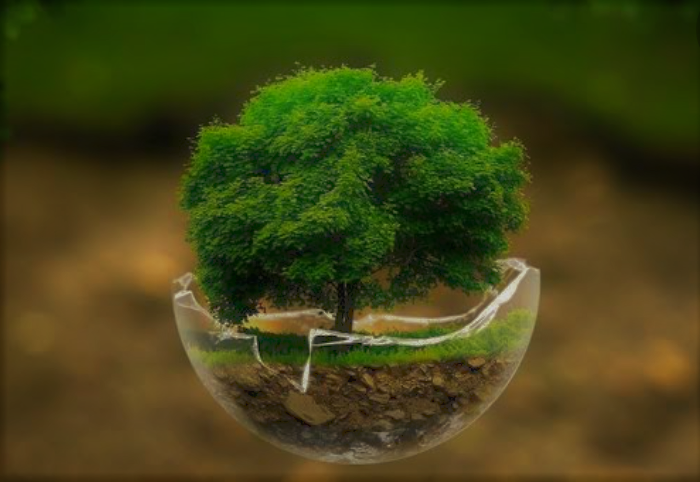

Page 4
Next
Nature As A Mother.
In this whole universe, one of the greatest and pleasant thing is the “Nature”.
She always want to encourage every organism to develop, to accommodate in this world of survival.
As a mother, she takes care of every organism regardless of their skills and superiority or size, like every organism belongs to her.

For birds, she gave trees, for fishes, she gave seas and for animals, she gave land.
She customised a very simple program and works on a basic principle i.e., the waste for us is the best for other,
through which she wants to make our life more towards humanity and less towards selfishness.
Everything that would become a necessity in future, is already present with time; like she knows every requirements of everyone.
Contents.
Previous
Name : Tejashvi Anand
Class : 10
Session : 2022-23
ID : 9559